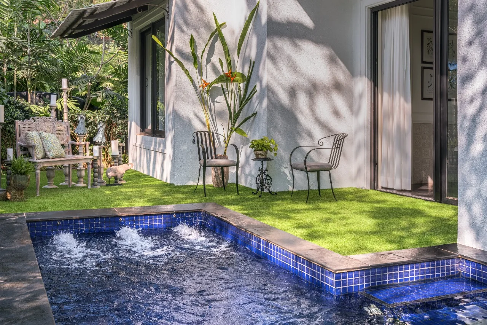
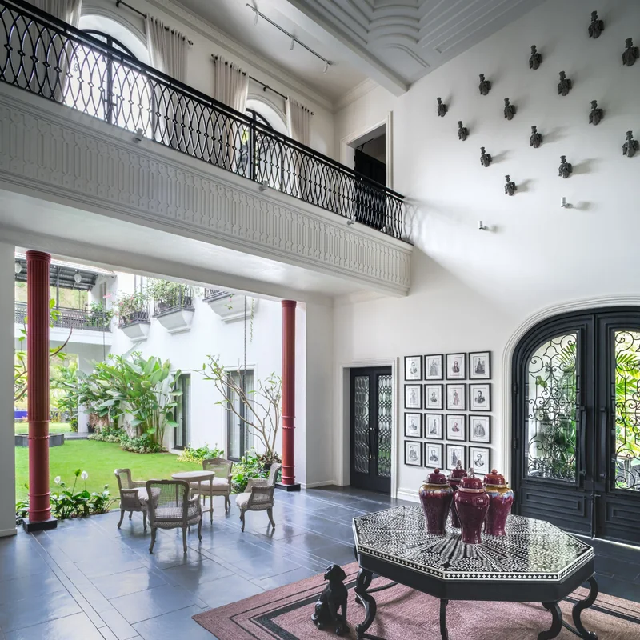

Tropical
Villa
A family home in Goa where the ease of tropical living meets the formality of a European villa. Rooms open slowly; light does the rest.

The story
A house that
opens slowly.
The brief was simple and demanding: make a villa that feels as though it has been in the family for generations, without borrowing a single unnecessary convention.
Set in Goa, the house draws on two very different references — the tropical modernism of Geoffrey Bawa and the romantic, layered classicism of Castello di Reschio. The result is an interior of tall rooms, deep thresholds and a calm, almost ceremonial sense of arrival.
The existing architecture offered a rare generosity: ceilings of 13 feet 6 inches, wide verandahs and a courtyard that could become the centre of daily life. We treated those gestures as an inheritance. New joinery, stone and plaster were chosen to recede, allowing the light and planting to lead.
Black Kadapah stone runs through the bathing rooms and along the verandah, its dark sheen holding shadows rather than competing with them. Ivory panelling, linen, aged brass and walnut bring softness. Nothing shines too loudly.
A conversation between old and new
Old objects were given new purpose — a pair of carved doors, a collection of botanical prints, a chandelier with a family history. Around them, contemporary pieces were drawn to a quieter scale, so that memory could speak without turning the house into a museum.
In Goa, a home is lived both inside and out. Every principal room opens to garden or sky; the courtyard brings air into the plan and gives the bath suite its own private horizon. The house is as much about the sound of water and the movement of shade as it is about any single room.

The heart of the house
A room for gathering, under the old balcony.
The double-height living court is the social heart of the villa. A filigree iron balcony circles the volume above; below, red columns and deep doors frame the garden. We kept the palette almost monastic — white plaster, black stone, warm timber — so that the architecture, the collected objects and the green outside could do the talking.
The room is designed to be used at every hour: morning light across the floor, a long lunch in the shade, lamps and candles after dark. Its generosity is not in decoration, but in space and in the freedom to rearrange it for the occasion.
“Quiet luxury is not about less. It is about nothing unnecessary.”Shamains Design Group

The principal bath
Five hundred square feet of quiet ritual.
The principal bath is a room in its own right — over 500 square feet, with a freestanding tub set beneath a crystal chandelier, his-and-hers vanities in dark walnut, and doors that open directly to the garden. Black Kadapah stone underfoot gives the room its gravity; the chandelier gives it a little theatre.
Morning light enters through the garden doors and moves slowly across the stone. At night, the room becomes intimate and warm. It is a place designed for the rituals that make a day feel unhurried.
The house,
room by room.
Seven studies · select to enlarge
Interiors
Shamains Design Group
New Delhi, India
Photography
Fabien Charuau
Recognition
Houzee Awards 2026
Architecture & Design Community Awards 2025
With thanks
The homeowners, and the artisans and makers of Goa who brought the details to life.